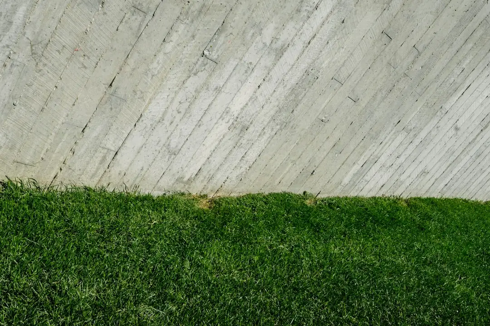

For homeowners comparing concrete sleeper retaining walls gold coast options, the practical decisions are wall height, drainage, access, approval requirements and the condition of the ground behind the wall.
Concrete Sleeper Retaining Walls Gold Coast Explained
Concrete Sleeper Retaining Walls Gold Coast describes work for sloping blocks, tired timber walls and new boundary walls. Before requesting a quote, record the approximate wall length and height, what it will hold back, whether an existing wall needs removal and whether machinery can reach the work area.
Soil, access, drainage, footings and any load above the wall can change the construction approach and final price. A driveway, house or pool near the wall should be identified at the outset because it may affect whether engineering is needed. Photos are not required for the initial enquiry, although a clear description of the site gives the installer useful starting information.
- Measure the approximate wall length and height.
- Note nearby fences, buildings, driveways, pools and other structures.
- Describe a leaning wall, rotting timber or standing water.
- Ask how materials and equipment will reach the work area.
Match the sleeper system to the job
Precast concrete sleepers slot between hot dip galvanised steel posts that are concreted into the ground. The listed sleepers are typically 200 mm high and 75 mm or more thick, with lengths of 1.6 m, 2.0 m and 2.4 m. Those dimensions affect post spacing, handling and how the wall follows the block.
Replacement of treated pine is a common project situation where the existing wall is leaning or beginning to rot. The website describes treated pine sleeper walls as typically lasting around 15 to 25 years, depending on drainage and soil. Concrete sleepers do not rot, according to the same description.
Structure and appearance should be priced separately. Available finishes include charcoal, timber look and sandstone, while plain grey sleepers can be painted with exterior masonry paint. A boundary wall may also support a Colorbond fence or act as an under fence plinth, so the quote should identify the proposed arrangement.
Compare prices by inclusion
The 2026 figures are useful for comparing like with like, but they are not a quotation. Supplied and installed work is indicated at about $250 to $650 or more per square metre of wall face. A one metre high Gold Coast wall is described at roughly $295 to $590 per lineal metre installed, with $440 given as a typical figure.
Ask whether the figure includes excavation, old wall removal, spoil handling, steel posts, sleepers, footings, drainage materials, outlet work and certification. A lower headline rate may simply leave more site work outside the allowance.
- Confirm the measured wall height and length.
- Check whether access and excavation are included.
- Separate engineering and certification from construction costs.
- Compare the same finish, drainage method and removal allowance.
Drainage and approval questions
The described drainage arrangement uses a slotted agricultural pipe at the base, clean gravel and geotextile fabric, with the pipe falling to an approved outlet. Ask where water will discharge and whether the outlet work is included. Boundary walls need particular discussion about drainage and setbacks where neighbouring land is close.
Retaining walls are regulated building work in Queensland. The website states that building work valued over $3,300, including most retaining walls, must be completed by a QBCC licensed contractor, typically under a structural landscaping or builder licence class.
Taller walls or walls carrying extra load may need building approval and an engineer's design. Where approval is required, a building certifier issues it before work begins. Ask whether engineering is done or directly supervised by a Registered Professional Engineer of Queensland.
Before post holes are excavated, the website recommends lodging a free Before You Dig Australia enquiry to check for underground pipes and cables.
Questions to settle before accepting
A written quote should state the assumptions about soil, access and existing structures. Ask what happens if rock or unsuitable ground is encountered, whether the old wall is removed and how long the quoted figure remains valid. Confirm the sleeper size, post type, finish, drainage materials and outlet.
Warranty wording should identify what is covered and any conditions relating to drainage, ground movement or later alterations. Ask who handles approval paperwork and request copies of engineering or certification documents relevant to the work.
For another perspective on comparing Gold Coast retaining wall quotes, read this separate retaining wall comparison guide. The next practical step is to write down the wall dimensions, nearby loads, access limits and existing wall condition before seeking an itemised assessment.
- Describe the wall. Provide the suburb, rough length and height, what the wall retains and whether an old wall is being removed.
- Check the site. Discuss soil, access, drainage, nearby structures and any driveway, pool or house load above the wall.
- Compare itemised quotes. Check that excavation, materials, drainage, removal, engineering and approval responsibilities are clearly stated.
- Check underground services. Lodge a free Before You Dig Australia enquiry before post holes are excavated.
- Review approval needs. Ask whether the wall needs building approval, engineering design or certification before work starts.
| Work item | Indicative guide figure | Main pricing variables |
|---|---|---|
| Supplied and installed wall | $250 to $650+ per m² of wall face | Height, access, drainage and footings |
| One metre high wall | $295 to $590 per lineal metre | Site and construction details |
| Engineering and certification | $500 to $2,000 per job where needed | Wall height, loads and design requirements |
This guide covers concrete sleeper wall options, indicative costs, drainage, approval questions and quote comparisons for Gold Coast sites.